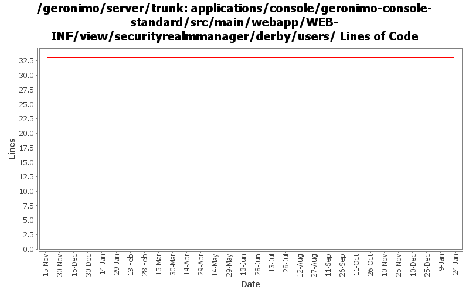

[root]/applications/console/geronimo-console-standard/src/main/webapp/WEB-INF/view/securityrealmmanager/derby/users

| Author | Changes | Lines of Code | Lines per Change |
|---|---|---|---|
| Totals | 21 (100.0%) | 33 (100.0%) | 1.5 |
| jaydm | 2 (9.5%) | 29 (87.9%) | 14.5 |
| dwoods | 1 (4.8%) | 4 (12.1%) | 4.0 |
| kevan | 12 (57.1%) | 0 (0.0%) | 0.0 |
| jdillon | 6 (28.6%) | 0 (0.0%) | 0.0 |
(GERONIMO-3747) Moved applications/* to plugins/*
0 lines of code changed in 6 files:
GERONIMO-3264 Web accessibility updates for Admin Console - part 2
4 lines of code changed in 1 file:
Cleaning up formatting and removing tabs
29 lines of code changed in 2 files:
GERONIMO-2537 Minor license header updates. Most not really necessary, but makes it easier to scan for problems
0 lines of code changed in 2 files:
GERONIMO-2537 Integrating yet another patch supplied by Jay McHugh. Thanks Jaysvn status! Adds apache license header to files in applications/
0 lines of code changed in 10 files: